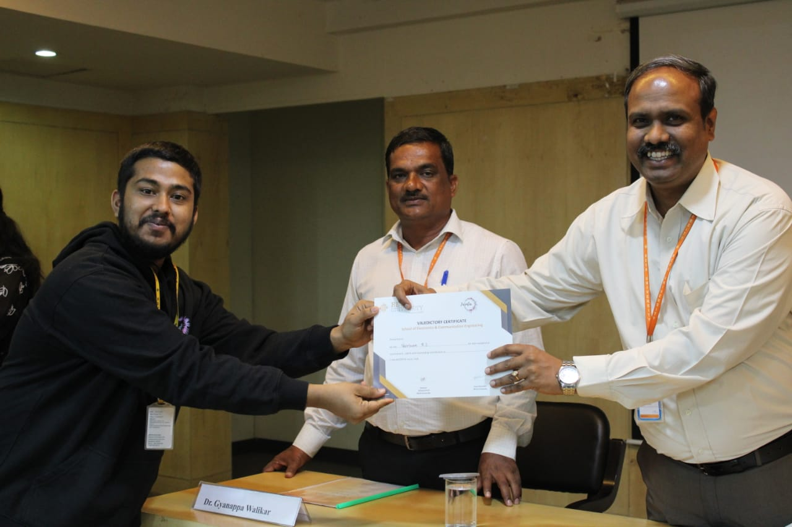
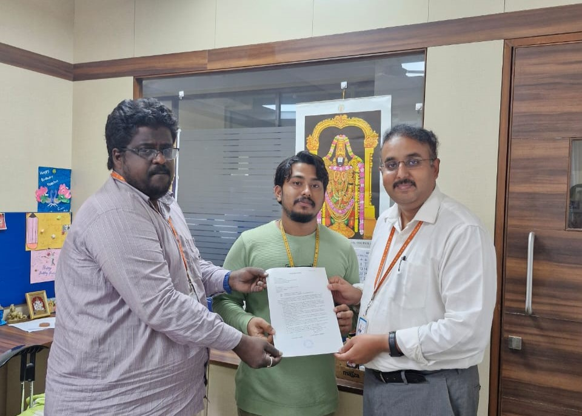

About Me
Hello! I'm Preetham R S, a passionate learner and aspiring professional in Bioelectronics and Data Science. I am currently pursuing my B.Tech at REVA University, Bengaluru, and have a keen interest in AI, ML, and IoT.
“Curiosity and creativity are my guiding principles. I always seek to learn new things and to use my knowledge and skills to solve problems and help others.”
Current Status
I am currently working on a journal article centred around ML-aided computational drug discovery. Additionally, I am actively seeking opportunities to collaborate on innovative projects in AI, ML, and immunoinformatics. At present, I am serving as a Research Assistant Intern at the Research and Development Cell at Reva University.
Projects
- AI and ML for Drug Discovery: Applying AI and ML techniques to improve the drug development process. (Python, ML, FLASK, HTML, CSS, JavaScript)
- Heart Disease Prediction Using ML: An ensemble model combining ANN and SVM to predict heart disease. (Python, Machine Learning)
- Pulse Oximeter: An IoT-based pulse oximeter for real-time SpO2 levels and blood pressure readings. (ESP32, Embedded C, MAX30102)
- Optical Lactometer (Design Patent): A smart lactometer to measure the purity of milk. (Raspberry Pi, Microsensors)
Publications
- "Phylogenetic Studies of Surface Glycoprotein (S1 spike protein) Sequence of SARS-CoV-2 Virus". Mentor: Dr. Raje Siddiraju Upendra
- "Securing 5G-Enabled Internet of Medical Things in Healthcare: Vulnerabilities, Threats, and Architectural Framework". Mentor: Abdul Haq Nalband
- "Integration of Machine Learning with Computational Drug Discovery for Identifying Potential Inhibitors against Pathogens – A Case Study with HIV and E. coli.". Mentor: Dr. Raje Siddiraju Upendra
Certifications
- Databases and SQL for Data Science with Python - February 2022
- Python for Data Science, AI & Development - March 2021
- Training in Java and Spring Boot offered by TNIF Foundation - February 2024
- Introduction to the Internet of Things and Embedded Systems - June 2022
Achievements
- Completed AICTE Training And Learning (ATAL) Academy Faculty Development Program on Synthetic Biology and Biomimetic Applications
- Participated in the ETBS-2023 3rd international conference
- IEEE Engineering in Medicine & Biology Society and IEEE Communications Society member
- Vice Secretary of Music Club INCENTIA
Photos
 Education
- B.Tech. in Bioelectronics - REVA University, Bengaluru. Anticipated graduation date: July 2024. GPA: 8.89
- 12th - KALPATARU PU COLLEGE, Tiptur. Percentage: 71.33
- 10th - MORARJI DESAI RESIDENTIAL SCHOOL